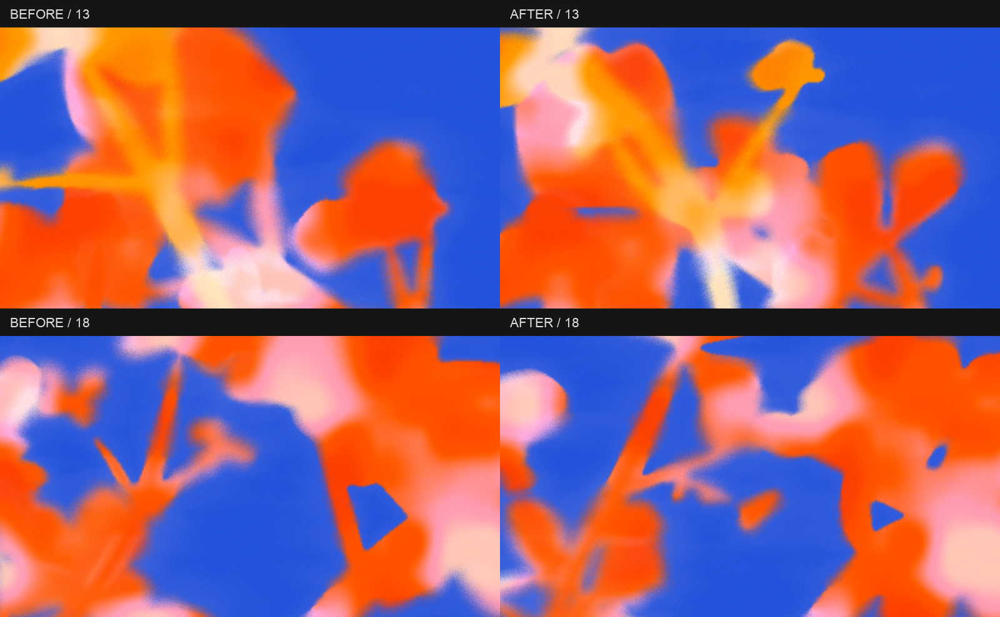

Ember · Cluster · 4 растения · 1920 × 1080. Те же 20 seed. Материал, палитра и настройки сохранены; изменена структура ветвления.
Grain 49 · Size 1 · Softness 50 · Edge variation 80 · Contrast 120 · Glow 10 · Coverage 10 · Halo 100.
Предыдущая серия · До / после на одинаковых seed
Ветви крепятся на разной высоте и могут расти из боковых побегов. Направление соцветия следует изгибу ветви. При низкой Recognizability часть лепестков распределяется вдоль стебля. Ручное редактирование, скрытие и отсоединение частей сохранены.
Слева предыдущая версия, справа новая. Настройки и seed одинаковые.

Структура стала менее регулярной. На некоторых seed тонкие побеги при текущей Softness почти растворяются в фоне; более собранный силуэт можно получить, уменьшив Softness.
Загрузка…